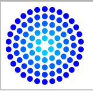

Jedna od metoda transformacija je rotacija. Ona se koristi kada postoji potreba da se neki crtež zarotira za neki ugao.
function crtaj() {
canvas = document.getElementById("kocke");
if (canvas.getContext) {
ctx = canvas.getContext("2d");
ctx.translate(75,75);
for (i = 1; i < 6;i ++){ // crta prstenove (iznutra ka van)
ctx.save();
ctx.fillStyle="rgb("+(0*i)+", "+(255-51*i)+", 255)";
for (j=0; j<i*6; j++){ // crta pojedinačne kružiće
ctx.rotate(Math.PI*2/(i*6));
ctx.beginPath();
ctx.arc(0,i*12.5,5,0,Math.PI*2,true);
ctx.fill();
}
ctx.restore();
}
}
}

Renderovani prikaz koda